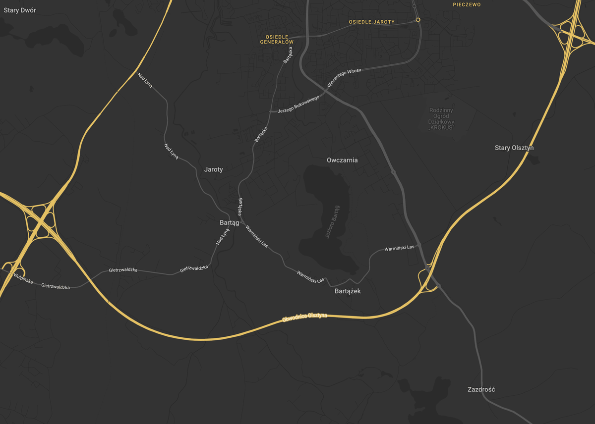

Bartąg:
Klinika Terapii Zabawą dla Dzieci
Warmińskie Centrum Psychoterapii — Analiza otwarcia kliniki CCPT (Child-Centered Play Therapy) w rejonie Bartąg/Stawiguda. Wynajem, wykończenie, sprzęt, budżet.
📋 Spis Treści
- Wytyczne Karoliny — Wizja i wymagania
- Bartąg — Dlaczego tutaj?
- Wymagania Lokalu — Układ mieszkania
- Rynek Wynajmu — Oferty i ceny
- Wykończenie — Minimalne koszty
- Sprzęt CCPT — Zabawki i wyposażenie
- Budżet Całkowity — Podsumowanie inwestycji
- Prognoza Przychodu — Model finansowy
- Analiza Wizualna — Wykresy ECharts
- Następne Kroki — Plan działania
Wytyczne Karoliny — Wizja i Wymagania
Kluczowe wymagania
Jedna lokalizacja: Bartąg
Nie rozważamy wielu lokalizacji — skupiamy się na rejonie Bartąg/Stawiguda, blisko Olsztyna. To rozwijające się przedmieście z młodymi rodzinami.
Wynajem, nie kupno
Mieszkanie na wynajem — elastyczność, niższe koszty początkowe, możliwość zmiany lokalizacji jeśli biznes potrzebuje więcej przestrzeni.
Układ mieszkania = klinika
Dwa pokoje (sypialnie) = sale terapii zabawą. Osobna kuchnia = pokój personelu. Korytarz = poczekalnia. Minimum 50–60 m², 3+ pokoje.
Gotowe do wejścia
Koszty wykończenia minimalne: tylko malowanie, meble, zabawki/sprzęt. Żadnych zmian strukturalnych, ścian, instalacji.
Sprzęt CCPT — szczegółowa lista
Potrzebna pełna lista zabawek i sprzętu do terapii zabawą (Child-Centered Play Therapy). Preferencja: drewno zamiast plastiku. Część zabawek może być używana (OLX, Allegro, Vinted).
Dlaczego ten model ma sens
- Niskie ryzyko finansowe — depozyt + pierwszy miesiąc czynszu + meble + zabawki = 25–35 tys. PLN, nie 180–330 tys. jak przy zakupie/remontcie
- Szybki start — mieszkanie gotowe do wejścia, malowanie 2–3 dni, meble z IKEA w tydzień, zabawki przez internet
- Elastyczność — jeśli lokal nie działa, zmieniamy. Jeśli potrzebujemy więcej przestrzeni, przenosimy się
- Test rynku — potwierdzamy popyt na terapię zabawą w Bartągu przed większą inwestycją
Bartąg — Dlaczego Tutaj?
Profil Gminy Stawiguda
| Atrybut | Dane |
|---|---|
| Populacja | 13,319 mieszkańców |
| Odległość od centrum Olsztyna | 8–12 km |
| Kluczowe wsie | Bartąg, Stawiguda, Bartążek, Gągławki, Tomaszkowo |
| Charakter | Szybko zurbanizowujące się przedmieście, przyjazne rodzinom |
| Nowe inwestycje mieszkaniowe | Wielorodzinne na ul. Kwiatowej, Bartąskiej |

Dlaczego Bartąg jest idealny dla CCPT
Bartąg i okolice to jeden z najszybciej rozwijających się rejonów pod Olsztynem. Nowe osiedla mieszkaniowe = młode rodziny z dziećmi w wieku przedszkolnym i wczesnoszkolnym (4–12 lat) — główna grupa docelowa CCPT.
Bezpośrednie połączenie autobusowe z Olsztynem (MZK). Główna arteria ul. Olsztyńska/Bartąska. Rodzice dowożą dzieci po pracy — 15–20 min z centrum Olsztyna. Parking przy budynku to niezbędne.
Zespół Szkolno-Przedszkolny w Stawigudzie, szkoły w Bartągu — bez dedykowanych usług psychologicznych z diagnostyką. WCP może stać się głównym partnerem szkół w rejonie.
Czynsz za mieszkanie w Bartągu: 1,500–2,500 PLN/mies. Porównaj: Olsztyn centrum 3,500–7,000 PLN/mies. Różnica = 2,000–4,500 PLN/mies. oszczędności od pierwszego dnia.
Konkurencja
| Usługa | Dostępność w Bartągu | Pozycja WCP |
|---|---|---|
| Terapia zabawą CCPT | ❌ Brak | Pierwsza na rynku |
| Diagnostyka ADHD (MOXO/DIVA-5) | ❌ Brak lokalnie | Unikalna oferta |
| Psychoterapia dziecięca | ⚠️ Ograniczona | Możliwość współpracy |
| Poradnie psychologiczno-pedagogiczne | ⚠️ PPP Olsztyn | Komplementarne, nie konkurencyjne |
Wymagania Lokalu — Układ Mieszkania
Wizualizacja układu
🧸 Sala Terapii Zabawą 1
Sypialnia · ~12–16 m²
Sprzęt CCPT, zabawki, stół artystyczny
Półki na wysokości dziecka
🎭 Sala Terapii Zabawą 2
Sypialnia · ~12–16 m²
Sandtray, lalki, klocki
Alternatywnie: diagnostyka MOXO
🪑 Poczekalnia
Korytarz · Krzesła, stolik, zabawki oczekiwania, ulotki
☕ Pokój Personelu
Kuchnia · ~6–10 m²
Biuro, przerwy, przechowywanie materiałów
🚿 Łazienka
Dla pacjentów i personelu
Czystość i porządek
Wymagania minimalne
| Parametr | Minimum | Optymalnie |
|---|---|---|
| Powierzchnia całkowita | 50 m² | 55–65 m² |
| Liczba pokoi | 3 (2 sypialnie + kuchnia) | 3+ pokoje |
| Wielkość sypialni (sala terapii) | 10 m² każda | 12–16 m² każda |
| Parking | 1 miejsce | 2+ miejsca |
| Piętro | Parter preferowany | Parter z windą |
| Stan | Gotowe do zamieszkania | Odświeżone malowanie |
Kluczowe cechy lokalu
- Oddzielne pokoje (sypialnie) — sale terapii muszą być oddzielne drzwiami, nie otwarte przestrzenie
- Osobna kuchnia — nie aneks, tylko osobne pomieszczenie na pokój personelu
- Szeroki korytarz — miejsca na 2–3 krzesła i stolik dla rodziców czekających
- Cisza — oddalone od głównych drogów hałaśliwych, dobre okna
- Parking — rodzice dowożą dzieci, potrzebują miejsca na zaparkowanie
- Bezpieczeństwo — zamykane drzwi wejściowe, bezpieczne okna
Pojemność tygodniowa (2 sale terapii)
| Usługa | Sesji/dzień | Sesji/tydzień |
|---|---|---|
| Terapia Zabawą CCPT (dzieci 4–12) | 6–8 | 30–40 |
| Diagnostyka MOXO (w jednej sali) | 2–3 | 10–15 |
| Konsultacje dla rodziców | 2–3 | 10–15 |
| RAZEM | 50–70 |
Rynek Wynajmu — Oferty i Ceny
Aktualne oferty (OLX, kwiecień 2026)
Powierzchnia: 42 m² · Data ogłoszenia: 11 kwietnia 2026
Ocena: ⚠️ Poniżej minimum — 42 m² to za mało na 2 sale terapii + kuchnię + korytarz. Można rozważyć jeśli układ jest bardzo funkcjonalny.
Szacowana cena: ~1,500–1,800 PLN/mies.
Powierzchnia: 49 m² · Data ogłoszenia: 7 kwietnia 2026
Ocena: ✅ Na granicy minimum — 49 m² może wystarczyć przy dobrym układzie (2 sypialnie + kuchnia). Lokalizacja przy rondzie = dobra widoczność.
Szacowana cena: ~1,800–2,200 PLN/mies.
Powierzchnia: 57 m² · Data ogłoszenia: 29 marca 2026
Ocena: ✅✅ Najlepsza z dostępnych — 57 m², 3 pokoje. Odpowiada wymaganiom: 2 sypialnie na sale terapii + kuchnia na pokój personelu. Korytarz jako poczekalnia.
Szacowana cena: ~2,000–2,500 PLN/mies.
Benchmark cenowy — wynajem mieszkań, przedmieścia Olsztyna
| Rejon | PLN/m²/mies. | 50–60 m² (PLN/mies.) |
|---|---|---|
| Bartąg / Stawiguda | 35–50 | 1,750–3,000 |
| Olsztyn — Jaroty | 45–70 | 2,250–4,200 |
| Olsztyn — Centrum | 60–100 | 3,000–6,000 |
| Dajtki / Gutkowo | 40–60 | 2,000–3,600 |
Na co zwrócić uwagę przy oględzinach
- Układ pokoi — czy sypialnie są oddzielne drzwiami? Kuchnia osobna?
- Stan malowania — czy wystarczy odświeżenie czy pełne malowanie?
- Parking — czy jest miejsce pod budynkiem? Czy sąsiedzi nie blokują?
- Cisza — czy sąsiadzi głośni? Hałas ulicy? Sesje terapii wymagają spokoju
- Właściciel — czy zgadza się na działalność gospodarczą w mieszkaniu? Kluczowe!
- Dostępność dla osób z ograniczoną mobilnością — parter lub winda
- Okna — rolety/zasłony do kontroli światła (ważne przy MOXO)
Negocjacje czynszu — porady
Zaproponuj dłuższy kontrakt
2–3 lata z gwarancją podwyżki cap = niższy czynsz bazowy. Właściciele wolą stabilność.
Wyjaśnij działalność
Terapia dzieci = spokojni, cisi najemcy. Żadnych imprez, niskie zużycie. Właściciele to lubią.
Ustal kto płaci za media
Przy 50–60 m²: prąd ~200–350 PLN, woda ~80–150 PLN, ogrzewanie ~150–300 PLN zimą. Wynajem z mediami = prostsze budżetowanie.
Kaucja = 1 miesiąc, nie 3
Negocjuj kaucję do 1 miesiąca czynszu. Standard to 1–2 miesiące. 3 miesiące = ponadnormatywne.
Wykończenie — Minimalne Koszty
Budżet wykończenia
| Pozycja | Szacowany koszt (PLN) | Uwagi |
|---|---|---|
| Malowanie 2 sal terapii (~28 m²) | 800–1,500 | Farbą na biało / jasne kolory uspokajające |
| Malowanie korytarza (~10 m²) | 300–500 | Odświeżenie poczekalni |
| Malowanie kuchni/pokoju personelu | 200–400 | Opcjonalnie, jeśli stan dobry |
| Rolety/zasłony (2 sale + korytarz) | 300–600 | Ważne przy diagnostyce MOXO |
| RAZEM MALOWANIE / DROBNE | 1,600–3,000 |
Meble — sale terapii i poczekalnia
| Pozycja | Sztuk | Koszt (PLN) | Źródło |
|---|---|---|---|
| Niskie półki otwarte (drewniane, na wysokość dziecka) | 4 | 800–1,600 | IKEA KALLAX / używane OLX |
| Stół dziecięcy + 2 krzesła (drewniane) | 1 komplet | 300–500 | IKEA MAMMUT / używane |
| Krzesło terapeuty (dorosłe, wygodne) | 2 | 600–1,000 | IKEA / używane |
| Dywan/mata do zabawy (do prania) | 2 | 300–400 | IKEA / Allegro |
| Pojemniki na zabawki (podpisane) | 8–10 | 200–400 | IKEA SKUBB / kosze wiklinowe |
| Krzesła do poczekalni (korytarz) | 3 | 450–750 | IKEA / używane |
| Stolik do poczekalni | 1 | 150–300 | IKEA / używane |
| Mały regał na ulotki/materiały | 1 | 100–200 | IKEA |
| Stół biurowy + krzesło (pokój personelu) | 1 komplet | 400–700 | IKEA / używane |
| RAZEM MEBLE | 3,300–5,850 |
Kolorystyka sal terapii
- Ściany: Jasne, ciepłe tony — biały, kremowy, pastelowy zielony lub niebieski. Unikać jaskrawych kolorów (rozkoszują dzieci, utrudniają skupienie)
- Podłoga: Zostajemy przy istniejącej — dywan/mata do zabawy definiuje strefę zabawy
- Oświetlenie: Ciepłe, regulowane. Lamki na półkach. Unikać jarzeniówek
Sprzęt CCPT — Zabawki i Wyposażenie
1. Zabawki Codzienne / Opiekuńcze
Zabawki pozwalające dziecku odgrywać sceny z codziennego życia, budować relacje, wyrażać troskę. Fundament CCPT.
| Zabawka | Materiał | Sztuk | Cena (PLN) | Źródło |
|---|---|---|---|---|
| Domek dla lalek z mebelkami | 🪵 Drewno | 1 | 200–400 | Używany OLX / Allegro |
| Rodzina lalek (mama, tata, dzieci) | 🪵 Drewno | 1–2 | 50–80 | Allegro / sklep edukacyjny |
| Lalka-dziecko z butelką | Materiał + plastik | 1 | 30–50 | Allegro |
| Kukiełki (różne zwierzęta) | Materiał | 5 | 100–200 | 5 × 20–40 PLN sztuka |
| Zestaw kuchni zabawowej | 🪵 Drewno | 1 | 150–300 | Używany OLX / IKEA |
| Jedzenie zabawkowe | 🪵 Drewno | 1 | 50–100 | Allegro / IKEA |
| Podsumowanie kategoria 1 | 580–1,130 |
2. Zabawki Agresywne / Ekspresyjne
Dzieci potrzebują bezpiecznego sposobu na wyrażanie gniewu, frustracji, lęku. Te zabawki są kluczowe — nie pomijamy ich.
| Zabawka | Materiał | Sztuk | Cena (PLN) | Źródło |
|---|---|---|---|---|
| Worek bokserski / bop bag | Materiał | 1 | 80–150 | Allegro / Decathlon |
| Żołnierzyki | Plastik | 1 zestaw | 20–40 | Allegro |
| Dinozaury | 🪵 Drewno preferowany | 1 zestaw | 50–80 | Allegro / sklep edukacyjny |
| Dzikie zwierzęta (lwy, tygrysy, wilki) | 🪵 Drewno / guma | 1 zestaw | 40–70 | Allegro / Schleich |
| Gumowy nóż | Guma | 1 | 10–15 | Allegro |
| Podsumowanie kategoria 2 | 200–355 |
3. Materiały Kreatywne / Ekspresyjne
Arteterapia w CCPT: rysowanie, modelowanie, piaskownica. Najdroższa kategoria ze względu na sandtray.
| Zabawka / Materiał | Materiał | Ilość | Cena (PLN) | Źródło |
|---|---|---|---|---|
| Sandtray (skrzynka do piasku, ~60×80 cm) | 🪵 Drewno | 1 | 200–400 | Stolarz na zamówienie / OLX |
| Piasek do zabawy (jałowy, 10 kg) | 1 | 30–50 | Allegro / sklep zoologiczny | |
| Miniatury do sandtray (50–100 sztuk) | Mieszane | 1 zestaw | 200–500 | Allegro / OLX / Vinted |
| Markery zmywalne | 1 zestaw | 30–50 | Allegro / Empik | |
| Kredki (woskowe + ołówkowe) | 2 zestawy | 40–80 | Allegro / Empik | |
| Kolorowe ołówki | 1 zestaw | 30–50 | Allegro / Empik | |
| Papier do rysowania (A3 + A4) | Blok | 30–50 | Empik / Allegro | |
| Modelina / Play-Doh | 3–4 zestawy | 30–50 | Allegro / Empik | |
| Nożyczki bezpieczne + klej | 1 zestaw | 20–30 | Empik | |
| Akwarele + pędzle | 1 zestaw | 40–60 | Allegro / Empik | |
| Podsumowanie kategoria 3 | 650–1,320 |
4. Zabawki Konstrukcyjne / Manipulacyjne
Klocki i puzzle rozwijają motorykę małą, dają poczucie kontroli i sprawstwa.
| Zabawka | Materiał | Sztuk | Cena (PLN) | Źródło |
|---|---|---|---|---|
| Klocki drewniane (zestaw podstawowy) | 🪵 Drewno | 1 | 80–150 | Allegro / używane OLX |
| LEGO (cegły podstawowe, nie tematyczne) | Plastik | 1 | 100–200 | Używane OLX / Vinted |
| Kafelki magnetyczne | Plastik + magnes | 1 | 80–150 | Używane OLX / Vinted |
| Puzzle (zestaw, wiek 4–12) | Karton | 3–4 | 40–80 | Empik / Allegro |
| Podsumowanie kategoria 4 | 300–580 |
5. Narzędzia Ekspresji Emocjonalnej
Pomoc w identyfikacji i nazywaniu uczuć — kluczowe w CCPT i terapii dzieci.
| Narzędzie | Materiał | Sztuk | Cena (PLN) | Źródło |
|---|---|---|---|---|
| Plakat emocji (w języku polskim) | Papier | 1 | 20–30 | Allegro / Empik |
| Karty emocji (styl Dixit) | Karton | 1 | 50–80 | Allegro / Empik |
| Lustro niezbijalne (ścienne) | Akryl | 1 | 40–60 | Allegro / IKEA |
| Podsumowanie kategoria 5 | 110–170 |
6. Organizacja Pokoju / Wyposażenie
Elementy wyposażenia sali, które organizują przestrzeń i ułatwiają prowadzenie sesji.
| Element | Materiał | Sztuk | Cena (PLN) | Źródło |
|---|---|---|---|---|
| Niskie półki otwarte (wysokość dziecka) | 🪵 Drewno | 4 | 800–1,600 | IKEA KALLAX / używane OLX |
| Stół dziecięcy + 2 krzesła (drewniane) | 🪵 Drewno | 1 | 300–500 | IKEA / używane |
| Krzesło dorosłe dla terapeuty | Drewno + tkanina | 2 | 600–1,000 | IKEA / używane |
| Dywan / mata do zabawy (do prania) | Tkanina | 2 | 300–400 | IKEA / Allegro |
| Pojemniki na zabawki (podpisane) | Wiklina / tkanina | 8–10 | 200–400 | IKEA / Allegro |
| Timer wizualny (do zakończenia sesji) | Plastik | 1 | 30–50 | Allegro |
| Podsumowanie kategoria 6 | 2,230–3,950 |
Podsumowanie budżetu sprzętu CCPT
| Kategoria | Minimum (PLN) | Optymalnie (PLN) |
|---|---|---|
| 1. Codzienne / Opiekuńcze | 580 | 1,130 |
| 2. Agresywne / Ekspresyjne | 200 | 355 |
| 3. Kreatywne / Ekspresyjne | 650 | 1,320 |
| 4. Konstrukcyjne / Manipulacyjne | 300 | 580 |
| 5. Ekspresja Emocjonalna | 110 | 170 |
| 6. Organizacja Pokoju | 2,230 | 3,950 |
| RAZEM SPRZĘT CCPT | 4,070 | 7,505 |
Strategia zakupowa — drewno zamiast plastiku
- Domek dla lalek — drewniane na OLX od 200 PLN (nowe 500–800 PLN)
- Kuchnia zabawkowa — drewniana IKEA/used od 150 PLN (nowa 400–700 PLN)
- Klocki drewniane — na OLX od 80 PLN za duży zestaw
- Półki KALLAX (IKEA) — 4 sztuki × 99 PLN = 396 PLN nowe (używane 50–70 PLN/szt.)
- Miniatury do sandtray — budować stopniowo z OLX i Allegro, nie kupować gotowych zestawów (są droższe)
Budżet Całkowity — Podsumowanie Inwestycji
Rozbicie budżetu
| Kategoria | Minimum (PLN) | Optymalnie (PLN) |
|---|---|---|
| Kaucja za mieszkanie (1 miesiąc) | 1,500 | 2,500 |
| Pierwszy miesiąc czynszu | 1,500 | 2,500 |
| Malowanie / drobne wykończenie | 1,600 | 3,000 |
| Meble (sale + poczekalnia + pokój personelu) | 3,300 | 5,850 |
| Sprzęt CCPT (zabawki, sandtray, materiały artystyczne) | 4,070 | 7,505 |
| Organizacja pokoju (półki, pojemniki, dywany, timer) | Wliczone w sprzęt CCPT | |
| Drobny sprzęt biurowy (drukarka, telefon) | 500 | 1,000 |
| Identyfikacja wizualna (logo, szyld, ulotki) | 800 | 2,000 |
| Marketing startowy (Google Ads, ulotki do szkół) | 1,500 | 3,000 |
| Rezerwa (nieprzewidziane) | 2,000 | 3,000 |
| RAZEM INWESTYCJA POCZĄTKOWA | 16,770 | 30,355 |
Porównanie z modelem v1 (zakup/remont)
| Model | Inwestycja początkowa | Miesięczny koszt stały | Ryzyko |
|---|---|---|---|
| v1: Zakup + remont (120 m² lokal usługowy) | 180,000–330,000 PLN | 6,550–10,100 PLN | Wysokie |
| v2: Wynajem mieszkania (Bartąg) | 17,000–30,000 PLN | 2,500–4,000 PLN | Niskie |
Różnica inwestycji początkowej: 10–15× mniejsza. Miesięczne koszty stałe: 2–3× niższe. To pozwala na test rynku bez dużego ryzyka finansowego.
Koszty miesięczne (operacyjne)
| Pozycja | Miesięcznie (PLN) |
|---|---|
| Czynsz | 1,500–2,500 |
| Media (prąd, woda, ogrzewanie, internet) | 500–900 |
| Ubezpieczenie OC | 150–300 |
| Internet / telefon | 100–200 |
| Uzupełnienie materiałów CCPT | 100–200 |
| KOSZTY STAŁE (bez terapeuty) | 2,350–4,100 |
Prognoza Przychodu — Model Finansowy
Cennik WCP (potwierdzony)
| Usługa | Czas | Cena (PLN) |
|---|---|---|
| Sesja indywidualna (terapia zabawą wliczona) | 50 min | 250 |
| Konsultacja rodzicielska | 50 min | 250 |
| Test MOXO | 30–50 min | 300 |
| Diagnostyka DIVA-5 | 90–150 min | 600 |
| Conners-3 + MOXO (pakiet) | — | 1,000 |
Scenariusze przychodowe (miesięcznie)
| Scenariusz | Sesji/tydzień | Przychód/mies. | Koszty stałe | Koszt terapeuty (55%) | Zysk netto (przed opodatkowaniem) |
|---|---|---|---|---|---|
| Start (25% obłożenia) | 12–15 | 12,000–15,000 | 3,500 | 6,600–8,250 | 1,250–3,250 |
| Umiarkowany (50%) | 25–30 | 25,000–30,000 | 3,500 | 13,750–16,500 | 4,750–10,000 |
| Docelowy (75%) | 38–45 | 38,000–45,000 | 3,500 | 20,900–24,750 | 9,600–16,750 |
| Pełne obłożenie | 50–60 | 50,000–60,000 | 3,500 | 27,500–33,000 | 13,500–23,500 |
Próg opłacalności
Prognoza roczna (Rok 1)
| Kwartał | Sesji/tydzień | Przychód kwart. | Komentarz |
|---|---|---|---|
| Q1 (Miesiąc 1–3) | 8–12 | 26,000–39,000 PLN | Budowa bazy pacjentów, skierowania ze szkół |
| Q2 (Miesiąc 4–6) | 15–20 | 49,000–65,000 PLN | Rosnąca rejestracja, szeptanka |
| Q3 (Miesiąc 7–9) | 22–30 | 72,000–97,500 PLN | Stabilny przepływ, diagnostyka rośnie |
| Q4 (Miesiąc 10–12) | 25–35 | 81,000–114,000 PLN | Ugruntowana pozycja, pakiety diagnostyczne |
| ROK 1 RAZEM | 228,000–315,500 PLN |
Analiza Wizualna — Wykresy Interaktywne
Projekcja ROI Rozwoju — 24 Miesiące
Wykres obszarowy pokazuje akumulację kosztów inwestycyjnych vs. przychodów. Punkt przecięcia = moment progu opłacalności, po którym inwestycja generuje zysk.
Przepływ Pacjentów — Migracja do Bartąg
Diagram Sankey ilustruje skąd pochodzą pacjenci nowej lokalizacji: migracja z istniejących klinik WCP + nowi pacjenci z rejonu Bartąg/Stawiguda.
Wykorzystanie Mocy i Struktura Inwestycji
Wskaźnik wykorzystania mocy — obecne kliniki vs. projekcja z Bartąg
Podział inwestycji początkowej — Bartąg (25,000–35,000 PLN)
Przychody wg Lokalizacji — Projekcja 12 Miesięcy
Skumulowany wykres słupkowy: istniejące kliniki (Olsztyn, Elbląg, Ostróda) + prognoza nowej lokalizacji Bartąg. Wzrost w czasie od otwarcia.
Następne Kroki — Plan Działania
Tydzień 1 — Natychmiastowe akcje
Skontaktuj się z ofertą #3 (57 m², 3-pokojowe)
Najlepsza z dostępnych — 57 m², 3 pokoje, układ mieszkania pasuje do wymagań. Umów oględziny.
Ustaw alerty OLX / Otodom
"Mieszkanie na wynajem Bartąg", "Mieszkanie Stawiguda", "3 pokoje Olsztyn południe". Powiadomienia na email.
Skontaktuj się z agentami nieruchomości
Agenci w Olsztynie specjalizujący się w wynajmie mieszkań. Opisz wymagania: 50–60 m², 3 pokoje, Bartąg/Stawiguda, zgoda na działalność.
Tydzień 2 — Oględziny i weryfikacja
Obejrzyj 2–3 mieszkania
Sprawdź układ pokoi, parking, hałas, sąsiadów. Zrób zdjęcia. Oceń ile malowania potrzebne.
Porozmawiaj z właścicielem o działalności
Czy zgadza się na wpis działalności gospodarczej pod adresem? To kluczowe — bez tego nie podpisujemy umowy.
Zacznij rekrutację terapeuty CCPT
Poszukaj certyfikowanego terapeuty zabawą z dostępnością 20–30 godzin/tydzień. To wąskie gardło — zacznij już teraz.
Tydzień 3–4 — Umowa i zamówienia
Podpisz umowę najmu
Negocjuj: kaucja 1 miesiąc, długość 2–3 lata, zgoda na działalność, klauzula o rozwiązaniu z miesięcznym okresem wypowiedzenia.
Zamów malowanie
2–3 dni pracy. Kolory: biały/jasny w salach terapii, neutralny w korytarzu. Farby bezwonne (dzieci!).
Zamów meble IKEA
Półki KALLAX, stół i krzesła, krzesła do poczekalni, pojemniki. Dostawa 2–3 dni. Montaż 1 dzień.
Kup zabawki CCPT
Używane z OLX/Allegro (domek, kuchnia, LEGO, klocki drewniane) + nowe z Empik/Allegro (farby, kredki, modelina). Sandtray na zamówienie u stolarza. Budżet: 4,000–7,500 PLN.
Tydzień 5–6 — Start
Otwarcie
Ustawienie zabawek, organizacja sal, testy oświetlenia. Sesje próbne z własnymi dziećmi / znajomymi.
Marketing lokalny
Ulotki do szkół w Bartągu/Stawigudzie, post na FB lokalne grupy, Google Business Profile z nowym adresem, aktualizacja wcp.com.pl.
Oś czasu — podsumowanie
| Krok | Czas | Koszt |
|---|---|---|
| Oględziny + wybór lokalu | Tydzień 1–2 | 0 PLN |
| Podpisanie umowy (kaucja + 1. miesiąc) | Tydzień 2–3 | 3,000–5,000 PLN |
| Malowanie | Tydzień 3–4 | 1,600–3,000 PLN |
| Meble + sprzęt CCPT | Tydzień 3–5 | 7,370–13,355 PLN |
| Organizacja + testy | Tydzień 5 | 0–500 PLN |
| Start sesji | Tydzień 6 | — |
| RAZEM | 6 tygodni | ~17,000–30,000 PLN |